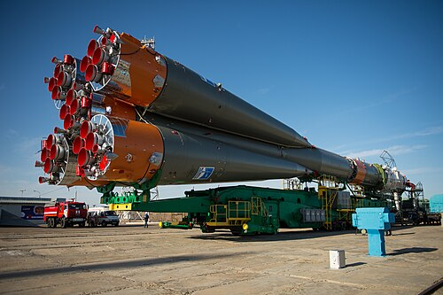

Oroszország ismert űrhajóitól, például a Soyuz és a Progress űrhajótól.
Oroszország, illetve a korábbi Szovjetunió, az űrkutatás történetének egyik legelső és legmeghatározóbb szereplője. Az első műhold, a Szputnyik, és az első ember az űrben, Jurij Gagarin, mind a szovjet űrprogram sikerei voltak. Ez az örökség ma is tovább él az orosz űrhajókban.
A Soyuz űrhajó évtizedek óta az egyik legmegbízhatóbb emberes űreszköz a világon. Első repülése óta folyamatosan fejlesztik, és ma is aktívan szállít űrhajósokat a Nemzetközi Űrállomásra. Egyszerű, robusztus felépítése és kiváló biztonsági rendszere miatt a Soyuz az űrrepülés egyik legnagyobb mérnöki sikere.
A személyzet mellett az ellátás is létfontosságú az űrállomások működéséhez. Ebben kulcsszerepet játszik a Progress teherűrhajó, amely automatikusan dokkol az űrállomáshoz, és élelmet, üzemanyagot, valamint tudományos felszerelést szállít. A Progress hajók nélkül a hosszú távú űrbéli tartózkodás nem lenne lehetséges.
Az orosz űrhajók a megbízhatóság és a kitartó mérnöki fejlődés példái. Bár formájuk egyszerűbb, mint a modern nyugati űreszközöké, szerepük nélkülözhetetlen az emberes űrkutatás mindennapjaiban.